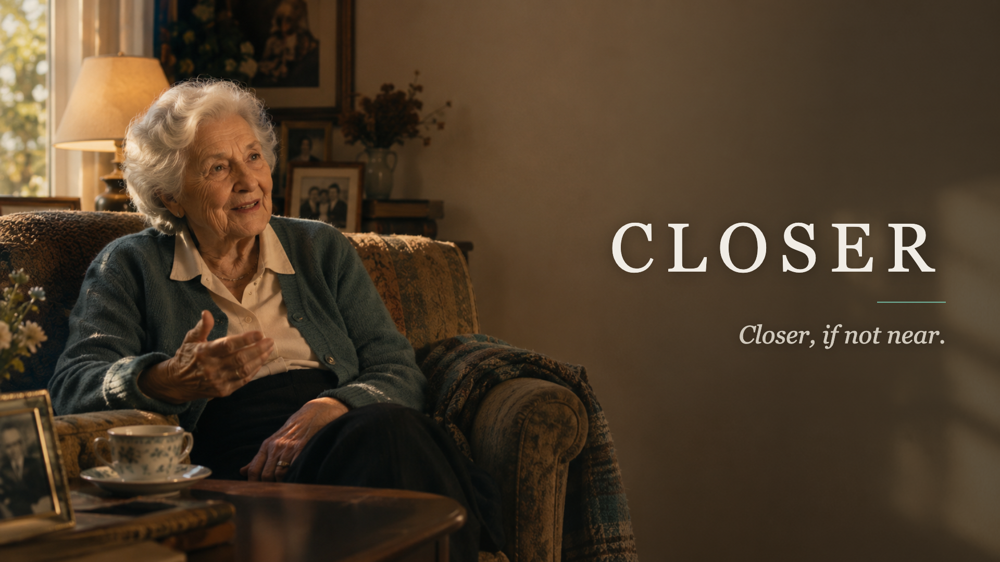

AssemblyAI Voice Agent Hackathon · September 2026
The ordinary Tuesday
Two point seven million people over seventy‑five
in Italy live on their own.
One household in ten. 92.8% of them can count on a relative. 3.2% have nobody.
Closer is not built for the 3.2%. It is built for the 92.8% — whose family
wants to be there and is not. Work, full days, three hours of motorway.
What is missing is not love. It is the ordinary daily contact, where somebody
would simply have noticed.
What medicine cannot reach
We have got good at the body.
Nobody is treating the silence.
We thin blood, hold cholesterol down, replace a knee, give insulin on a schedule.
There is no equivalent for somebody who has not had a real conversation since
Thursday. And the answer is not an interview: they are the expert on their own
past; Closer is the expert on what came after.
What today gives them
No work, no travelling, reading can be hard, and the afternoon is a quiz show.
Today gives them very little to say — and it is the past they are
surest of.
What they still own
Their past, and it is rich: a trade they were expert in, a town before it
changed, a team followed since the sixties, a dance floor.
Nobody asks about any of it any more.
What Closer brings back
It never tires of the sample room, and a 1960s switchboard is no trouble. It
knows the history around a life, and can say how that trade changed after they
left.
The profile carries a window — 1957–1998, the years they are
the authority on — and the doctrine’s third job is news from their
world. Never test them. Being old and being alone are a long silence, and
there is no medicine aimed at it.
Why now
Public payers have started buying this.
The buyers arrived
March 2026Washington State covers an AI companion under
Medicaid long‑term services — the first time nationwide one has been
fully reimbursed.
Six US states distribute one free. Korea has ~14,500 in homes, mostly
through local government. Italy’s national telemedicine plan targets
300,000 people by June 2026.
The users are arriving
18% → 30%AI use among US adults over fifty, in a
single year.
But only 23% of over‑65s have ever used a chatbot, against 66% of
under‑30s. Three quarters never have.
The barrier is the keyboard
2 in 3Italians over seventy‑five are not online at
all — 35.7%, rising about four points a year.
A chatbot needs an app, a login and typing. A conversation needs none of the
three.
The category now has budget lines. Almost nobody is reaching the people who are
not online — and they are two thirds of them.
ISTAT, Cittadini e ICT 2025 · AARP Tech Trends 2026 · Pew Research, Feb 2026
· Washington DSHS / Intuition Robotics, Mar 2026 · PNRR Missione 6
What exists today — not a mock‑up
A person talks to Closer in a browser,
or on an ordinary phone line.
The same published agent answers both, so nothing about the conversation depends on
the person owning a device, a smartphone, or an app. Which one is a choice per
person: the phone line reaches the two thirds who are not online — and a
browser or an operator’s own device leaves that line free to ring.
- A setup form that configures a companion for one specific person in about twenty minutes, filled in by someone who is not technical.
- A diary the person can correct out loud — it is theirs, and they can ask it what is in it.
- A note each conversation leaves for the next one.
- A page their family opens with a key. Nothing is sent to anybody; somebody opens it.
Prototype: lablab.claudiaonclaude.com
Code: github.com/sciarada75/voice-companion — public, MIT
How it is built
One agent. Two ways in. Three things
kept deliberately apart.
The person
A profile generated from what the family typed in free text — who they are,
what they will talk about, what their day looks like.
The language
A new country is a configuration, not a rewrite. English is the default; the
doctrine exists per language.
The doctrine
How the companion behaves. True for anyone, with that person’s own details
filled in at build time.
- Built on the AssemblyAI Voice Agent API. The tools are http tools on purpose: a client‑executed tool cannot be answered on a phone call.
- The greeting rotates before every conversation, so it never opens the same way twice.
- A number they say is written, never interpreted, inferred or rounded. That stage is code, not a model — so two people running it get the same number.
- The channel is a setting, not the product. A browser and a phone line today, an app next — or inside the app of a partner who already has that person opening it every day. We do not have to win the home screen if somebody already has.
Eleven spoken tests, eleven rules
The conversation rules are the part
that took the work.
Every rule in the doctrine is a defect heard out loud in a spoken test, and written
down so it could not come back.
- It picks one subject rather than offering a menu. A menu is work for the person.
- Most turns end without a question — an open question opens a subject they then have to carry.
- It never says where a fact came from. Nobody wants to be read a file about themselves.
- Two flat answers in a row and it stops. Not every day is a day for talking.
The doctrine describes the move, never a sentence the model can lift —
an example sentence gets recited verbatim on the first reply. That cost us two
rewrites to learn.
Where Closer stops
Three jobs, three owners.
| Closer |
asks, and writes down what was said — the words unchanged, and a number
they said written, never interpreted, inferred or rounded. |
| The family |
decides what is worth seeing. The setup form asks for their day and their medicines
in free text. It offers no measurements and no ranges: the moment we suggest
one, we have supplied the judgement. |
| The operator |
decides what to do about it. They have the nurses, the 24‑hour desk and
the responsibility. |
Why, and it is not modesty. Judging a health number is a regulated medical act
— it wants a notified body and a clinical evaluation, and it moves the decision
to a desk with no nurse at it. And a family who trust a tool to warn them
stop watching. Neither is a trade we will make.
The market is the majority, not the margin
Sized down, not up.
| Italy — where we pilot |
People |
Why this ring |
| Over‑75s living alone |
2.7 M |
ISTAT 2023. One household in ten. |
| … and no child within a kilometre |
~1.0–1.3 M |
51% of over‑75s have their nearest child within 1 km. The rest are the gap. |
| … and living with a limitation |
~550–650 k |
Roughly a fifth report severe limitations in daily activities. |
United Kingdom — the paying proof
1.7–2 million people already pay £19–32 a month
for a pendant alarm. That is roughly £450 M a year, spent on a button.
United States — where the payer is
16.2 million over‑65s live alone. Six states already hand out an AI
companion; one now reimburses it.
ISTAT 2023 · ONS / TakingCare · ACL Profile of Older Americans ·
NYSOFA · Washington DSHS
Who else, and what only we do
Everything that exists is either
reactive, generic, or a device.
| Today |
What it costs |
Where it stops |
Pendant alarms
Beghelli, Tunstall, Age UK |
€4–£32 / month |
It only speaks when it is pressed. No answer for the ordinary Tuesday. |
Volunteer phone lines
Auser Filo d’Argento |
free, 6,000 volunteers |
Inbound, office hours, capacity‑bound, and nothing is written down. |
| AI check‑in calls |
$8–30 / month |
The same script for everyone. It does not know who they are. |
Companion devices
ElliQ |
~$900 / year, publicly funded |
A device to install, in one language, in one country. |
Closer is configured to one person, from what their family typed, in
their language, on a phone line they already own. And it moves with
them: there is no box on the wall, so the same companion answers in a spare room
at Christmas, on a ward, and in the care home.
The price, and why it can be flat
€20 a month. Talk as much as you like.
No minutes counter, no plan to choose, nothing for the family to check. About
half an hour of conversation a day sits inside it, every day.
Why flat is possible
The conversation is billed by content, not by the clock: speech‑to‑text,
a small model, speech back. Roughly $0.012–0.020 a minute.
A speech‑to‑speech model charges for audio in and out and
re‑reads the whole conversation each turn, so a long chat compounds. Ours does
not: minute thirty costs what minute two costs.
The comparison that matters
A carer costs €8–12 an hour. So €20 buys under two
hours of a person, once a month — or half an hour of company every
single day.
Not an alarm, which is pressed once and insures against an event. This is the
ordinary day, and the ordinary day happens every day.
Revenue, wholesale
We sell per seat to the operator, who already owns the customer, the
line and the billing.
Selling to families direct does not work: you pay to find each one, and you
lose them when the person dies or moves into care. An operator already has
them, and absorbs that.
Plus a one‑off fee for the profile.
First customer: telecare providers
They already own everything Closer lacks.
| They have |
Closer has |
| The exact customer, already subscribed |
A reason to speak on a day nothing is wrong |
| A phone relationship into the house |
A conversation worth the person’s time |
| A 24‑hour call centre |
A page that says who to ring first, and why |
| Distribution and billing |
The thing their product cannot do |
Their pendant only speaks when it is pressed. Closer is the half that speaks
first — and their call centre becomes the escalation this project
deliberately does not build, because a machine should hand a person to a person.
The pilot
Fifty subscribers. Ninety days. One language.
| Measured |
Why it is the right measure |
| Share of the words spoken by the person |
It rises when the conversation is working. Across twelve test conversations the
thirty‑day average is 13%, the best reached 26%, from 5–9%
at the start. |
| Average answer length |
Thirty‑day average 7 words; the best conversations reached
12, from 4–5 at the start. |
| Conversations a week, against their own baseline |
Compared only with themselves. Never with a population. |
| Worth a call flags the desk agreed with |
The only honest test of whether the family page is useful. |
Every figure is arithmetic, not a model’s opinion, so two people running
it get the same number.
Then, in order
Same product each time.
Different buyer.
- Comune social services. Municipalities already run volunteer telephone
rounds for over‑75s living alone. A volunteer manages forty people. Closer speaks
to four thousand and hands the volunteer the twelve worth a visit. It does not replace
volunteers — it aims their time.
- Teleassistenza under the national telemedicine programme, which is funded
and has targets to meet by June 2026.
- Home care agencies. The carer comes Monday, Wednesday, Friday. Closer
covers the other four days, and hands the carer a page to read before going in.
- Pharmacy services. The diary already records what was taken. A medicine
routine is a pharmacy’s existing relationship, not a new one.
- Care homes — where every other product in this list loses the
customer. The move is usually not a choice, and it takes the last of their habits
with it. Closer is the one thing that arrives with them, already knowing who they
are.
In Japan, care technology in nursing homes raised care‑worker employment by
28%. It did not replace people. It kept them.
What is kept, and where
They are not the product.
- Recordings and transcripts are pulled to the operator, masked, and deleted at the speech provider.
- Secrets are removed before anything is written — only the fact that one came up is kept. The companion refuses to be told a PIN, itself included.
- The family page shows no transcript. They do not read their post. Only the people they named can open it.
- Nothing reaches anybody on its own. No alert, no message, no email. Somebody opens the page. That is a decision, not a missing feature.
A machine that has spoken to somebody twelve times is not entitled to an opinion
about their mind.
CLOSER
Closer, if not near.
lablab.claudiaonclaude.com
github.com/sciarada75/voice-companion
deck by ClaudiaOnClaude